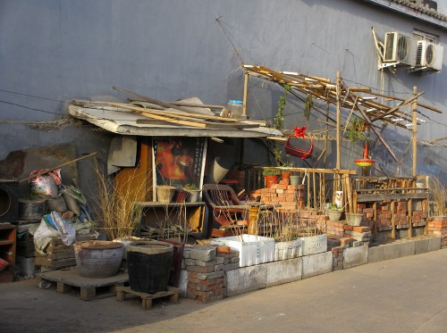

The task at hand is a difficult one, as it involves reconciling two of humanity’s desires – the desire for
urbanity, born of humankind’s desire to be with other humans, and the desire for nature – which
theoretically are irreconcilable (Cantillon 1755; Mumford 1964). A second factor makes this course of action
even more delicate, namely the very complexity of the idea of nature. More particularly, it is very
difficult to grasp exactly what city-dwellers mean by “nature”, and therefore to precisely define their
desires in this regard. Nature is often seen as a whole, as a concrete reality, and as something unique for
different people (according to respondents, and even interviewers). The concept then becomes somewhat
simplistic: it becomes a question of understanding – for example, by reconsidering John Dixon Hunt’s
typology (1996) – exactly what kind of nature city-dwellers want, ranging from a wild, virgin nature; to
Cicero’s alteram naturam, exploited by humanity to satisfy its needs, i.e. the countryside; to a nature
improved by art, Jacopo Bonfadio’s terza natura, or “third nature”. By “nature”, urbanites often mean nature
that has been domesticated and transformed, perhaps because it is essentially the only kind they know. And
yet when asked about the possibility of making room for non-domesticated nature in green spaces – i.e.
nature that is left to its own devices in order to encourage biodiversity, such as grasslands – the same
city-dwellers respond favourably. At the same time, though, they also want accessible, well-maintained lawns
(Bourdeau‑Lepage et al. 2012). It then becomes a matter of deciphering urbanites’ demand for nature, and
capturing all the nuances of this demand, in order to move towards urban developments that meets the needs
of the greatest number.

A garden in a public space in Beijing (spring 2012)